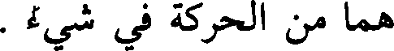
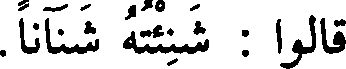
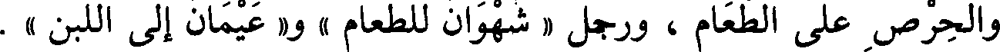
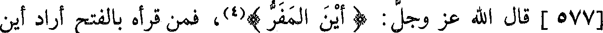
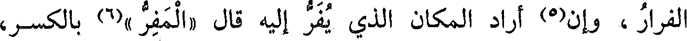
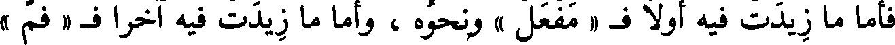
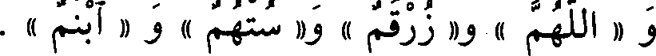
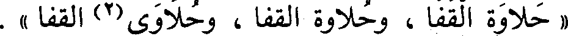
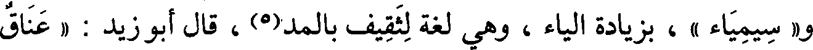
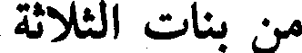

File: 000458.gt.txt (if the image is defective, simply delete all Arabic text and the line will be excluded)

النار » و« دوران » و« طوفان » ، وأشباه(2) ذلك كثير(3) .
File: 000459.gt.txt (if the image is defective, simply delete all Arabic text and the line will be excluded)

وقد شذ منه شيء ؛ فقالوا « الميلان » و« موتان الأرض » [600]وليس
File: 000460.gt.txt (if the image is defective, simply delete all Arabic text and the line will be excluded)

هما من الحركة في شيء .
File: 000461.gt.txt (if the image is defective, simply delete all Arabic text and the line will be excluded)

قال : وهذا البناء لا يجيء فعله يتعدى الفاعل ، إلا أن يشذ شيء ،
File: 000462.gt.txt (if the image is defective, simply delete all Arabic text and the line will be excluded)

قالوا : شنئته شنآنا .
File: 000463.gt.txt (if the image is defective, simply delete all Arabic text and the line will be excluded)

قال : و« فعلان » كثيرا ما يأتي(4) في الجوع والعطش ، وما قاربهما ،
File: 000464.gt.txt (if the image is defective, simply delete all Arabic text and the line will be excluded)

قالوا : « ظمآن » ، و« عطشان » ، و« صديان » ، و« هيمان « بمعنى
File: 000465.gt.txt (if the image is defective, simply delete all Arabic text and the line will be excluded)

عطشان .
File: 000466.gt.txt (if the image is defective, simply delete all Arabic text and the line will be excluded)
وقالوا : « جوعان » و« غرثان » ، و« علهان » وهو الشديد الغرث
File: 000467.gt.txt (if the image is defective, simply delete all Arabic text and the line will be excluded)

والحرص على الطعام ، ورجل « شهوان للطعام » و« عيمان إلى اللبن » .
File: 000468.gt.txt (if the image is defective, simply delete all Arabic text and the line will be excluded)

وقالوا : « قرم إلى اللحم » فأخرجوه من هذه البنية وجعلوه بمنزلة
File: 000469.gt.txt (if the image is defective, simply delete all Arabic text and the line will be excluded)
الداء ، كما قالوا : دو ، ووجع .
File: 000470.gt.txt (if the image is defective, simply delete all Arabic text and the line will be excluded)

قال : ومما قارب هذا المعنى فبنوه بناءه « لهفان » و« حران »
File: 000471.gt.txt (if the image is defective, simply delete all Arabic text and the line will be excluded)

« منسج الثوب » حيث ينسج و« منسج » ، « مغسل الموتى » حيث
File: 000472.gt.txt (if the image is defective, simply delete all Arabic text and the line will be excluded)

يغسلون و« مغسل »، و« مقبض السيف ومقبضه » و« مضربه ومضربه » ،
File: 000473.gt.txt (if the image is defective, simply delete all Arabic text and the line will be excluded)

و« المنسك والمنسك » ، و« المسكن والمسكن » ، و« مفرق الطريق
File: 000474.gt.txt (if the image is defective, simply delete all Arabic text and the line will be excluded)

ومفرقه » . وكذلك « مفرق الرأس »(2) ، و« مطلع ومطلع » ، و« محشر
File: 000475.gt.txt (if the image is defective, simply delete all Arabic text and the line will be excluded)

ومحشر » و« منبت ومنبت » « ومدب السيل (3) ومدب » ، وهو « محل أجر
File: 000476.gt.txt (if the image is defective, simply delete all Arabic text and the line will be excluded)

ومحل أجر » .
File: 000477.gt.txt (if the image is defective, simply delete all Arabic text and the line will be excluded)

كل ما كان على فعل يفعل فالاسم منه مكسور، والمصدر مفتوح
File: 000478.gt.txt (if the image is defective, simply delete all Arabic text and the line will be excluded)

[577] قال الله عز وجل : ( أين المفر )(4)، فمن قرأه بالفتح أراد أين
File: 000479.gt.txt (if the image is defective, simply delete all Arabic text and the line will be excluded)

الفرار ، وإن(5) أراد المكان الذي يفر إليه قال «المفر »(6) بالكسر،
File: 000480.gt.txt (if the image is defective, simply delete all Arabic text and the line will be excluded)

وتقول(7) : « هذا مضرب فلان » تريد الموضع الذي ضرب إليه وبلغه ،فإن
File: 000481.gt.txt (if the image is defective, simply delete all Arabic text and the line will be excluded)

أردت المصدر قلت : «إن في ألف درهم لمضربا» أي : ضربا، قال الله
File: 000482.gt.txt (if the image is defective, simply delete all Arabic text and the line will be excluded)

تعالى : ( وجعلنا النهار معاشا )(8) يريد عيشا، وهو مصدر .
File: 000483.gt.txt (if the image is defective, simply delete all Arabic text and the line will be excluded)

وقد جاء بعض المصادر على « مفعل » والأول أكثر وأقيس ، قال عز
File: 000484.gt.txt (if the image is defective, simply delete all Arabic text and the line will be excluded)

« يخرج » لقالوا(1) « يؤخرج » .
File: 000485.gt.txt (if the image is defective, simply delete all Arabic text and the line will be excluded)

قال الفراء : الميم تزاد في أول الحرف وآخره ، ولا تزاد في وسطه ؛
File: 000486.gt.txt (if the image is defective, simply delete all Arabic text and the line will be excluded)

فأما ما زيدت فيه أولا ف «مفعل » ونحوه ، وأما ما زيدت فيه آخرا ف « فم »
File: 000487.gt.txt (if the image is defective, simply delete all Arabic text and the line will be excluded)

و « اللهم » و« زرقم » و« ستهم » و « ابنم » .
File: 000488.gt.txt (if the image is defective, simply delete all Arabic text and the line will be excluded)

قال سيبويه(2) : وكل ميم كانت في أول حرف فهي مزيدة ، إلا ميم
File: 000489.gt.txt (if the image is defective, simply delete all Arabic text and the line will be excluded)

« معزى » فإنها من نفس الحرف ؛ لأنك تقول معز ، ولو كان زائدة لقلت
File: 000490.gt.txt (if the image is defective, simply delete all Arabic text and the line will be excluded)

عزى(3) ، وميم « معد » لأنك تقول تمعدد ، و « تمفعل » قليل ، قالوا من
File: 000491.gt.txt (if the image is defective, simply delete all Arabic text and the line will be excluded)

مسكين « تمسكن » وهو من التمسكن(4) ، و « تمدرع » في(5) المدرعة .
File: 000492.gt.txt (if the image is defective, simply delete all Arabic text and the line will be excluded)

وقال(6) : والميم في « المنجنيق (7) » من نفس الحرف ، وهو بمنزلة
File: 000493.gt.txt (if the image is defective, simply delete all Arabic text and the line will be excluded)

عنتريس ، و« منجنون » كذلك بمنزلة عرطليل [632] وميم « مأجج »
File: 000494.gt.txt (if the image is defective, simply delete all Arabic text and the line will be excluded)

و« مهدد »(8) من الحرف ؛ لأنهما لو كانتا(9) زائدتين لأدغمت(10)كمرد
File: 000495.gt.txt (if the image is defective, simply delete all Arabic text and the line will be excluded)

ومفر ، فإنما(11)بمنزلة الدالين في قردد .
File: 000497.gt.txt (if the image is defective, simply delete all Arabic text and the line will be excluded)

فعالة بثلاث لغات
File: 000498.gt.txt (if the image is defective, simply delete all Arabic text and the line will be excluded)

أتيته « ملاوة من الدهر وملاوة وملاوة » ، وهي « رغاوة اللبن ورغاية
File: 000499.gt.txt (if the image is defective, simply delete all Arabic text and the line will be excluded)

ورغاوة » ، و« الخلالة والخلالة والخلالة » مصدر خاللته ، سقط على(1)
File: 000500.gt.txt (if the image is defective, simply delete all Arabic text and the line will be excluded)

« حلاوة القفا ، وحلاوة القفا ، وحلاوى(2) القفا » .
File: 000501.gt.txt (if the image is defective, simply delete all Arabic text and the line will be excluded)

باب ما جاء فيه ثلاث لغات
File: 000502.gt.txt (if the image is defective, simply delete all Arabic text and the line will be excluded)

من حروف مختلفة الأبنية(3)
File: 000503.gt.txt (if the image is defective, simply delete all Arabic text and the line will be excluded)

هو « برقع وبرقع وبرقوع » ، والخوصة « الأبلمة والإبلمة والأبلمة » ،
File: 000504.gt.txt (if the image is defective, simply delete all Arabic text and the line will be excluded)

و« خاتم وخيتام وخاتام » ، و« سيما » مقصور و« سيماء » ممدود(4)
File: 000505.gt.txt (if the image is defective, simply delete all Arabic text and the line will be excluded)

و« سمياء » ، بزيادة الياء ، وهي لغة لثقيف بالمد(5) ، قال أبو زيد : « عناق
File: 000506.gt.txt (if the image is defective, simply delete all Arabic text and the line will be excluded)

تحلبة وتحلبة وتحلبة » للتي تحلب قبل أن تحمل . [597]
File: 000507.gt.txt (if the image is defective, simply delete all Arabic text and the line will be excluded)

باب ما جاء فيه أربع لغات
File: 000508.gt.txt (if the image is defective, simply delete all Arabic text and the line will be excluded)

من بنات الثلاثة